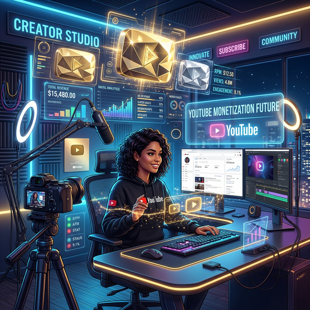

The Future of YouTube Monetization

For over a decade, the dream of the YouTube creator was singular and straightforward: get enough views to join the Partner Program, enable ads, and wait for the AdSense checks to roll in. It was a simple equation—views equal money. But as we move deeper into 2026, that equation is becoming increasingly unstable. Ad rates fluctuate wildly, algorithm changes can decimate reach overnight, and the sheer volume of content being uploaded means competition for ad inventory is fiercer than ever.
The future of YouTube monetization is no longer about relying on a single revenue stream. It is about diversification, direct connection, and technological integration. The creators who will thrive in the coming years are those who treat their channel not just as a content hub, but as a multifaceted media business. They are moving away from "rented land" dependency and building ecosystems where they control the value exchange.
In this comprehensive guide, we will explore the emerging trends that are reshaping how creators earn money on YouTube. From the rise of fan funding and social commerce to the integration of AI and immersive technologies, we will uncover the strategies that define the next generation of digital entrepreneurship.
1. The Decline of Ad-Dependency and the Rise of Fan Funding
AdSense is becoming a bonus, not a business plan. While it provides a baseline income, smart creators are shifting their focus to direct-to-consumer (DTC) revenue models. This shift puts the power back in the hands of the creator and the community, bypassing the unpredictability of advertiser demand.
Memberships and Subscriptions
YouTube Memberships have evolved significantly. No longer just a badge next to a name, they are becoming gateways to exclusive ecosystems. In the future, we expect to see deeper integration where members get access to:
- Exclusive Content: Behind-the-scenes footage, extended cuts, or early access to videos.
- Community Access: Private Discord servers, member-only live streams, or direct Q&A sessions.
- Digital Products: Free access to courses, presets, or ebooks created by the host.
The key is recurring revenue. A thousand fans paying $5 a month provides a stable $5,000 monthly income, regardless of how many views a specific video gets. This stability allows creators to take creative risks that ad-reliant channels cannot afford.
Super Chat, Super Stickers, and Super Thanks
Live streaming has become a massive revenue driver. Real-time interaction creates a sense of intimacy that pre-recorded content cannot match. Features like Super Chat allow fans to pay to have their messages highlighted during a stream, effectively turning engagement into a direct tip jar.
The future of this model lies in gamification. Expect to see more interactive elements where viewer contributions directly influence the content of the stream—voting on challenges, unlocking segments, or triggering on-screen effects. This turns passive viewing into an active, paid experience.
Key Insight: The most successful creators of 2026 will derive less than 30% of their income from ads. The majority will come from direct fan support and owned products.
2. Social Commerce: The Seamless Shopping Experience
We are witnessing the death of friction in e-commerce. The old model—seeing a product in a video, going to the description, copying a link, opening a browser, and searching for the item—is dead. The future is social shopping.
YouTube is aggressively integrating shopping features that allow viewers to purchase products without ever leaving the app.
- In-Video Product Tags: Creators can tag products directly on the video player. A viewer watching a tech review can tap a tag on a laptop to see the price and buy it instantly.
- Live Stream Shopping: Similar to the massive trend in Asia, creators can showcase products during live streams with a clickable shelf below the video. Viewers can purchase in real-time as the host demonstrates the item.
- Storefront Integration: Channels can have a dedicated "Shop" tab, turning their profile into a fully functional e-commerce store.
For creators, this means higher conversion rates. Every step removed from the buying process increases the likelihood of a sale. For brands, it means accessing a highly engaged audience at the exact moment of interest.
3. AI-Powered Personalization and Efficiency
Artificial Intelligence is not just changing how content is made; it is revolutionizing how it is monetized. In the future, AI will act as a personal business manager for every creator.
Dynamic Sponsorship Matching
Finding sponsors is currently a manual, often frustrating process. AI platforms will soon analyze a creator's audience demographics, engagement patterns, and content themes to automatically match them with perfect brand partners. Imagine an algorithm that says, "Your audience overlaps 80% with Brand X's target demographic. Here is a pre-negotiated deal." This democratizes sponsorship access for mid-tier creators who previously lacked the agency connections.
Automated Sales Funnels
AI chatbots integrated into community tabs or comment sections can handle customer inquiries about a creator's merchandise or courses 24/7. They can guide users through the purchasing process, answer FAQs, and even upsell related products, all without the creator lifting a finger.
4. Immersive Tech: AR, VR, and Virtual Goods
As hardware improves, the line between physical and digital goods is blurring. The future of monetization includes selling items that exist only in the digital realm.
- Virtual Merchandise: With the rise of avatars and virtual spaces, creators can sell digital clothing, accessories, or emotes that fans can use in games, metaverse platforms, or even as overlays during video calls.
- Augmented Reality (AR) Experiences: Imagine scanning a QR code in a video to project a 3D model of a product into your living room before buying it. Creators can charge brands a premium for creating these interactive AR integrations.
- Digital Collectibles: While the hype around NFTs has fluctuated, the underlying technology of verifiable digital ownership remains powerful. Limited edition digital collectibles, backstage passes, or ownership stakes in a community project could become standard revenue streams.
5. The Importance of Owned Traffic and Deep Linking
Perhaps the most critical shift in monetization strategy is the move toward owned traffic. Relying solely on YouTube's internal traffic is risky. The future belongs to creators who can drive their audience off-platform and bring them back at will.
This is where tools like OpeninYoutube become essential. When promoting products, memberships, or external content on social media (Instagram, TikTok, Twitter), the way you link matters.
- The Problem: Standard links often open in slow mobile browsers, causing users to drop off before they can buy or subscribe.
- The Solution: Deep linking ensures that when a user clicks a promo link, it opens directly in the relevant app (YouTube, Amazon, Shopify). This seamless experience drastically increases conversion rates.
By controlling the user journey and removing friction, creators ensure that their monetization efforts actually result in revenue. In a high-volume, low-attention world, smoothing the path to purchase is a competitive advantage.
The "Revenue Pyramid" Strategy
Build your income structure like a pyramid for stability:
Base (Stable): Fan Funding (Memberships, Patreon).
Middle (Growth): Affiliate Marketing & Social Commerce.
Top (Volatility Buffer): AdSense & Viral Sponsorships.
Focus on widening the base. The more stable income you have, the more creative freedom you enjoy.
6. Education and Information Products
The "Creator Economy" has spawned a sub-economy of people wanting to become creators. Consequently, selling knowledge is more lucrative than ever.
- Premium Courses: Deep-dive tutorials on specific skills (editing, lighting, scripting).
- Coaching and Consulting: One-on-one time with fans who want personalized advice.
- Communities: Paid access to mastermind groups where members network and learn from each other.
YouTube serves as the top of the funnel, providing free value that establishes trust. The monetization happens when a percentage of that audience upgrades to paid educational products for accelerated results.
Challenges and Ethical Considerations
With new monetization avenues come new responsibilities. As creators become more commercial, maintaining trust is paramount.
- Transparency: Audiences are savvy. Clearly disclosing sponsorships and affiliate links is not just legal requirement; it preserves credibility.
- Quality Control: Promoting low-quality products for a quick buck can destroy a reputation built over years. Vetting partners and products is crucial.
- Burnout: The pressure to constantly monetize can lead to content fatigue. Balancing commercial goals with creative passion is essential for long-term survival.
Warning: Avoid "get rich quick" schemes or predatory financial advice in your content. YouTube is cracking down on harmful financial content, and penalties can include demonetization or channel termination.
Conclusion: Building a Legacy, Not Just a Channel
The future of YouTube monetization is bright, but it is different. It rewards those who think like entrepreneurs, not just entertainers. It favors those who build direct relationships with their fans, leverage technology to remove friction, and diversify their income so that no single algorithm change can ruin their livelihood.
The tools are here. The platforms are evolving. The opportunity has never been greater for creators to capture the full value of their work. By embracing fan funding, social commerce, AI efficiency, and smart linking strategies, you can transform your channel from a hobby into a sustainable, thriving business.
Start today. Look at your revenue streams. Where are you over-reliant on ads? How can you deepen your connection with your top fans? The future belongs to those who build it themselves.
Ready to Grow Your Channel?
Use OpeninYoutube to direct your social followers straight to your YouTube app and boost your engagement today.
Try It For Free